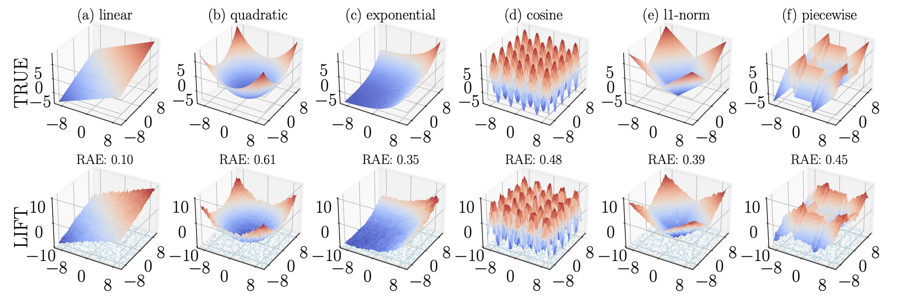
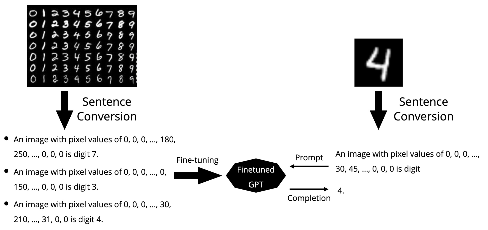
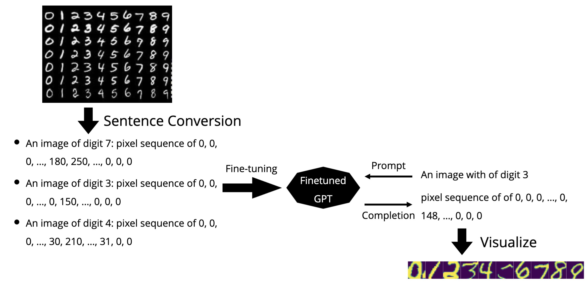

One Model, Many Tasks

LIFT for Tabular Regression

LIFT for Tabular Classification

LIFT for Image Classification

Fine-tuning pretrained language models (LMs) without making any architectural changes has become a norm for learning various language downstream tasks. However, for non-language downstream tasks, a common practice is to employ task-specific designs for input, output layers, and loss functions. For instance, it is possible to fine-tune an LM into an MNIST classifier by replacing the word embedding layer with an image patch embedding layer, the word token output layer with a 10-way output layer, and the word prediction loss with a 10-way classification loss, respectively. A natural question arises: Can LM fine-tuning solve non-language downstream tasks without changing the model architecture or loss function? To answer this, we propose Language-Interfaced Fine-Tuning (LIFT) and study its efficacy and limitations by conducting an extensive empirical study on a suite of non-language classification and regression tasks. LIFT does not make any changes to the model architecture or loss function, and it solely relies on the natural language interface, enabling "no-code machine learning with LMs." We find that LIFT performs comparably well across a wide range of low-dimensional classification and regression tasks, matching the performances of the best baselines in many cases, especially for the classification tasks. We also report experimental results on the fundamental properties of LIFT, including inductive bias, robustness, and sample complexity. We also analyze the effect of pretraining on LIFT and a few properties/techniques specific to LIFT, e.g., context-aware learning via appropriate prompting, calibrated predictions, data generation, and two-stage fine-tuning.
"LIFT/Full-Data" and "LIFT/Subset" represent LIFT on the full dataset and its subset used correspondingly in the ICL setting (number of prompts). Here, the size of the subset is chosen to satisfy the LMs' context length. Overall, LIFT/GPTs on full data achieve the best performances. However, when using the same number of samples, LIFT and ICL are more comparable in most cases. Note that both methods may be worse than MCC due to the limited training data in some cases.
The heatmap shows performance comparisons between different models across various datasets. Darker blue indicates higher accuracy. Hover over cells to see exact accuracy values and standard deviations.
@inproceedings{tuan_zeng_2022_lift,
author = {Dinh, Tuan and Zeng, Yuchen and Zhang, Ruisu and Lin, Ziqian and Gira, Michael and Rajput, Shashank and Sohn, Jy-yong and Papailiopoulos, Dimitris and Lee, Kangwook},
booktitle = {Advances in Neural Information Processing Systems},
pages = {11763--11784},
title = {LIFT: Language-Interfaced Fine-Tuning for Non-language Machine Learning Tasks},
volume = {35},
year = {2022}
}